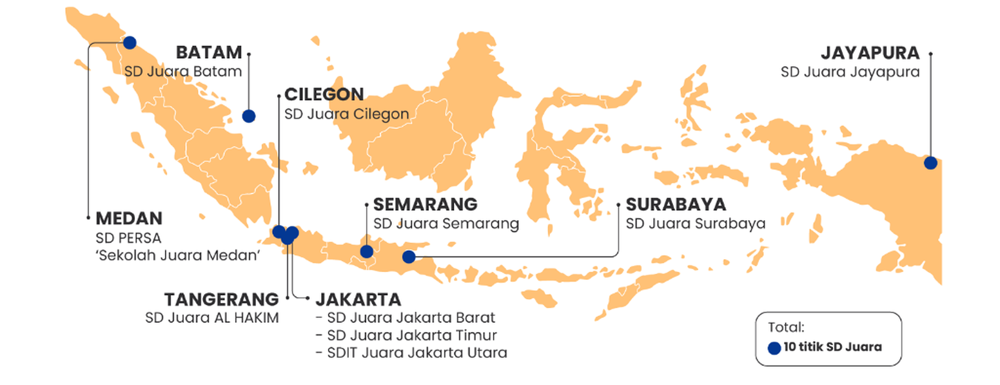
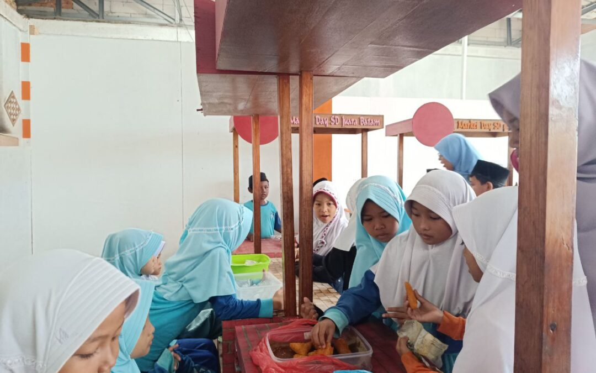
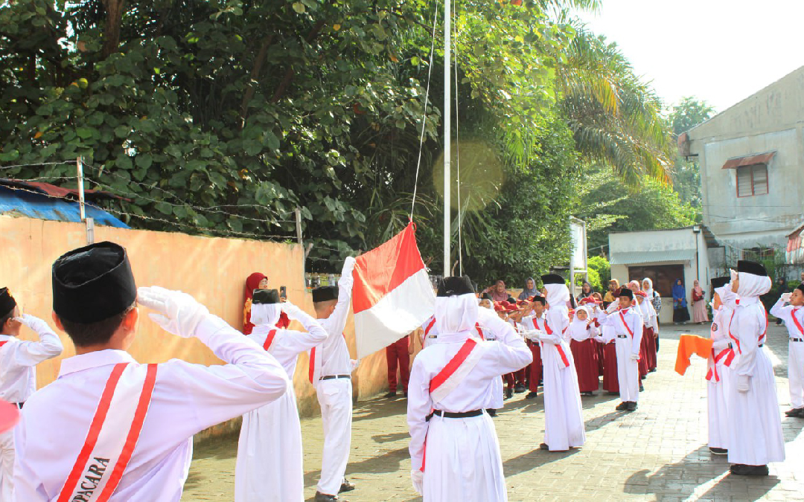
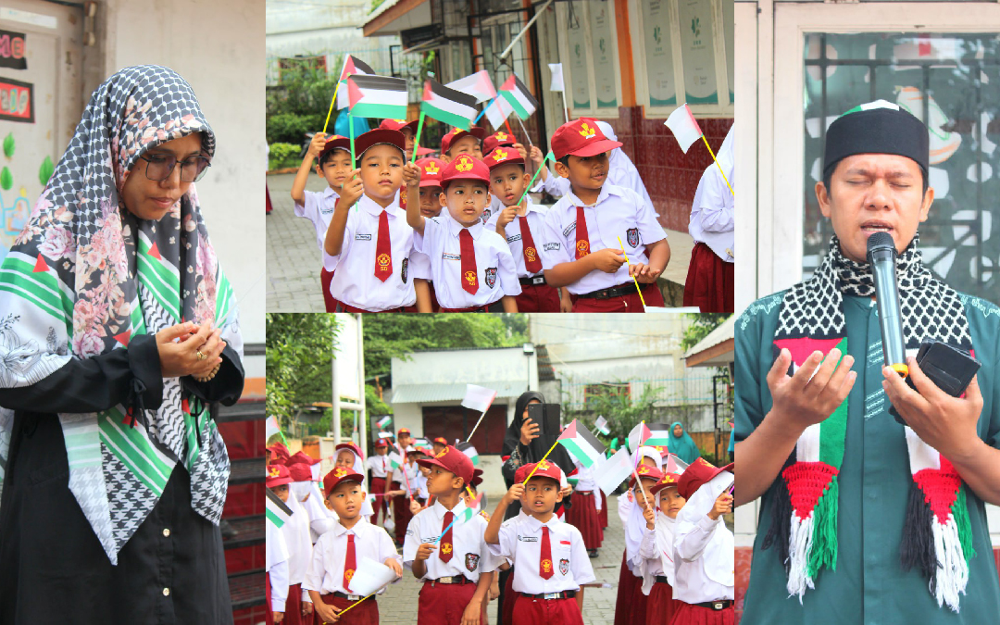
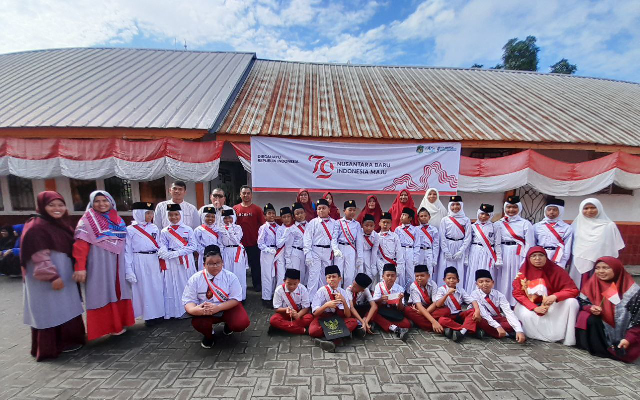
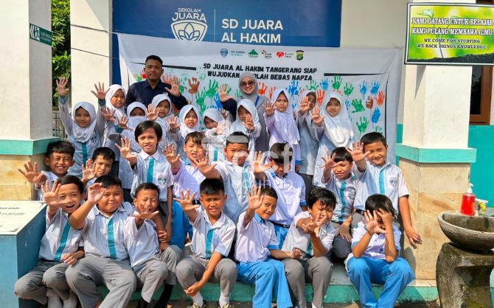
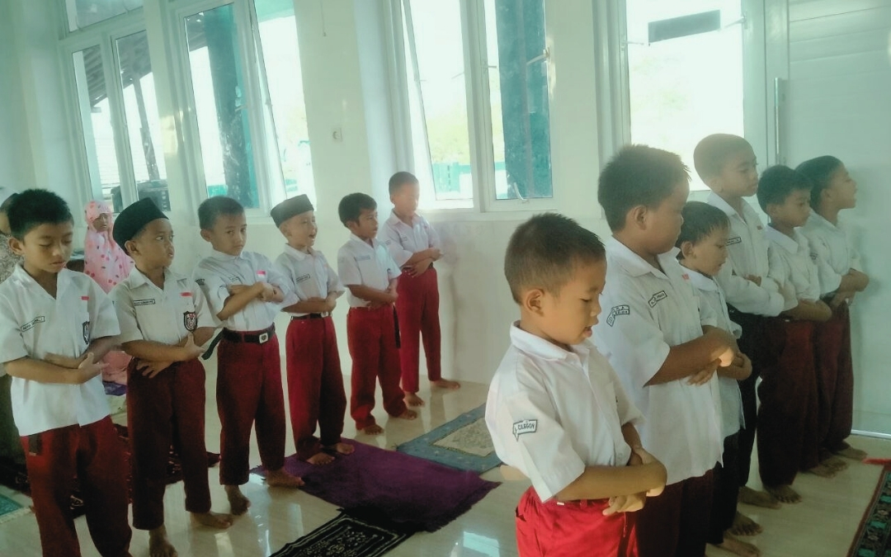

Peta Sebaran Sekolah Juara
Hadir di 10 titik strategis di berbagai penjuru nusantara untuk memperluas akses pendidikan berkualitas bagi anak bangsa.



Kurikulum Langit
Kurikulum Langit adalah kurikulum khas Sekolah Juara yang merupakan pengembangan dari Kurikulum nasional dan berfokus pada nilai-nilai karakter islami yang bersumber dari AlQur’an, Hadits dan Kitab-kitab Adab.
Kurikulum ini telah mendapatkan apresiasi dari Pusat Kurikulum (Puskur) Kementerian Pendidikan Dasar dan Menengah dengan menyebut bahwa “Kurikulum Langit” adalah kurikulum yang komprehensip karena dilaksanakan di sekolah, rumah dan lingkungan.
Tujuan dari Kurikulum Langit adalah mendidik manusia di bumi dengan kurikulum (dari) langit serta menghubungkan aktivitas siswa dengan wahyu Allah dan sunnah Nabi. Adapun metode yang digunakan dalam mengimplementasikan nilai-nilai karakternya meliputi keteladanan, pemahaman nilai, pembiasaan dan penegakkan aturan.
Kurikulum ini terdiri dari nilai-nilai karakter 7 Habits Juara dan 12 Adab Juara yang isinya adalah adab-adab yang sesuai dengan ajaran Islam serta selaras dengan budaya bangsa. Selain itu didukung dengan adanya modul untuk siswa, modul untuk pegangan guru, artefak karakter serta buku KOMPAK (Komunikasi dan Prestasi Anak).

 Bangun Sebelum Shubuh
Bangun Sebelum Shubuh
 Shalat Tepat Waktu
Shalat Tepat Waktu
 Dzikir
Dzikir
 Birul Walidain
Birul Walidain
 Santun dalam Bergaul dan Berbicara
Santun dalam Bergaul dan Berbicara
 Bersungguh-sungguh dalam Belajar
Bersungguh-sungguh dalam Belajar
 Mandiri dalam Beraktivitas
Mandiri dalam Beraktivitas

 Adab Shalat
Adab Shalat
 Adab Kepada Orang Tua dan Guru
Adab Kepada Orang Tua dan Guru
 Adab Menjaga Aurat
Adab Menjaga Aurat
 Adab Sesama Teman
Adab Sesama Teman
 Adab Bersama Al Quran
Adab Bersama Al Quran
 Adab Belajar
Adab Belajar
 Adab Penggunaan Gadget/Handphone
Adab Penggunaan Gadget/Handphone
 Adab dalam Bertanggung jawab
Adab dalam Bertanggung jawab
 Adab Berbicara
Adab Berbicara
 Adab Makan dan Minum
Adab Makan dan Minum
 Adab di Kamar Mandi
Adab di Kamar Mandi

Program Lukman Berilmu bertujuan untuk membangun kelekatan antara orang tua dan anak.
 Memeluk Anak
Memeluk Anak
 Mencium Anak
Mencium Anak
 Berbagi Ilmu
Berbagi Ilmu
Galeri Sekolah Juara
Potret inspiratif kegiatan belajar mengajar, pembiasaan karakter Kurikulum Langit, keceriaan siswa, dan prestasi SD Juara di seluruh penjuru Indonesia.






